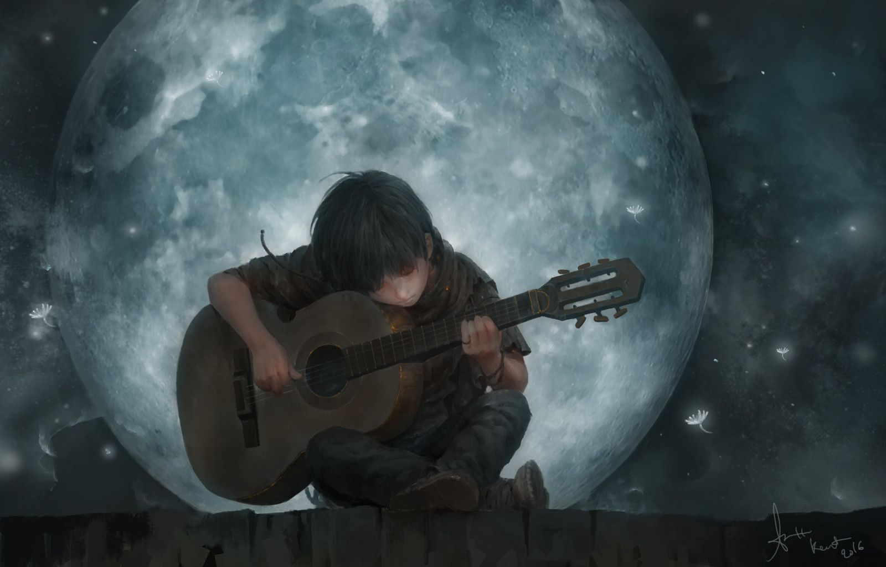

WEB SİTEME HOŞGELDİNİZ☻
Merhaba, kişisel web siteme hoşgeldiniz.Bu sitede sizlerle keyifle dinlediğim bazı şarkıları özetleyecek, şarkıların güçlü yanlarını, teknik birtakım detay ve özelliklerini analiz edeceğim. Ayrıca, hangi duygu durumlarımda hangi şarkıları daha çok tercih ettiğimi, beni nasıl etkilediklerini ve neden bu şarkıları çok sevdiğime dair kişisel paylaşımlarda da bulunacağım.
Şimdi bahsediceğim şarkıların genel bir özet tablosuna bakalım.
Şarkının ismi: |
The greatest show on earth |
Despacito |
Federkleid |
Another love |
Şarkının dili: |
ingilizce |
ispanyolca |
almanca |
ingilizce |
|---|
Şarkıcının / grubun adı: |
nightwish |
luis fonsi |
Faun |
tom odell |
Şarkının türü: |
progressive |
pop |
medieval |
pop |
Dinlerken hissettiğim duygu: |
doğanın ihtişamı |
eğlence |
nostalji,huzur |
hüzün,aşk |
Şarkı süresi: |
24 dakika |
4 dakika 40 saniye |
4 dakika 17 saniye |
4 dakika 8 saniye |
Detaylı anlatım için link: |
|
|
|
|

